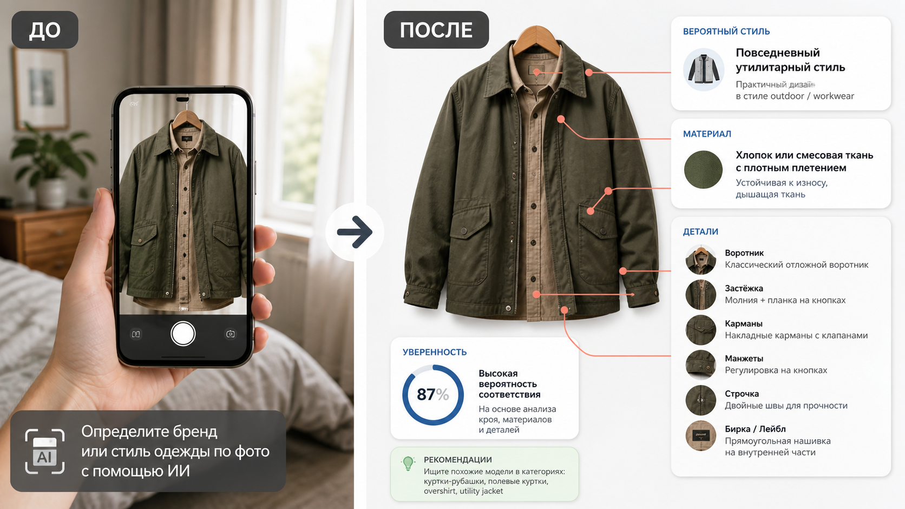

Промтзилла
Этот промт полезен, когда нужно понять, что за вещь на фото: ИИ разбирает крой, ткань, фурнитуру, бирку, логотип и стилистические признаки.

Пошаговая инструкция
- 1Сфотографируй вещь целиком и отдельно крупно бирку, фурнитуру, швы и логотип, если он есть.
- 2Загрузи фото в инструмент определения бренда одежды по фото.
- 3Вставь промт и попроси указать не только бренд, но и признаки, на которых основан вывод.
- 4Если бренд не определяется, попроси ИИ описать стиль и найти похожие категории вещей.
- 5Для покупки или проверки оригинальности сверяй результат с бирками, продавцом и официальными каталогами.
Пример результата
На обложке показан типичный сценарий: слева исходное фото, справа результат, который можно получить через инструмент определения бренда одежды по фото.
Промт
RU
Определи одежду на фото и сделай аккуратный разбор. Укажи: — вероятный бренд, если он виден по логотипу, бирке или характерным деталям; — тип вещи и стиль; — материал или вероятный состав ткани; — особенности кроя, посадки и силуэта; — фурнитуру, швы, застёжки, карманы и декоративные элементы; — уровень уверенности; — похожие бренды или категории, если точного ответа нет; — что нужно сфотографировать крупнее для уточнения. Не выдавай догадку за факт. Если логотипа или бирки не видно, не придумывай бренд, а опиши вероятный стиль и признаки.
EN
Identify the clothing item in the photo and provide a careful analysis. Include: — probable brand if visible from a logo, label, or distinctive details; — item type and style; — material or likely fabric composition; — cut, fit, and silhouette features; — hardware, stitching, closures, pockets, and decorative elements; — confidence level; — similar brands or categories if exact identification is not possible; — what details should be photographed closer. Do not present guesses as facts. If no logo or label is visible, do not invent a brand; describe the likely style and visual clues instead.
Важно
По одному фото нельзя надёжно подтвердить бренд и оригинальность вещи. Для покупки проверяй бирки, швы, фурнитуру, документы и репутацию продавца.
Теги